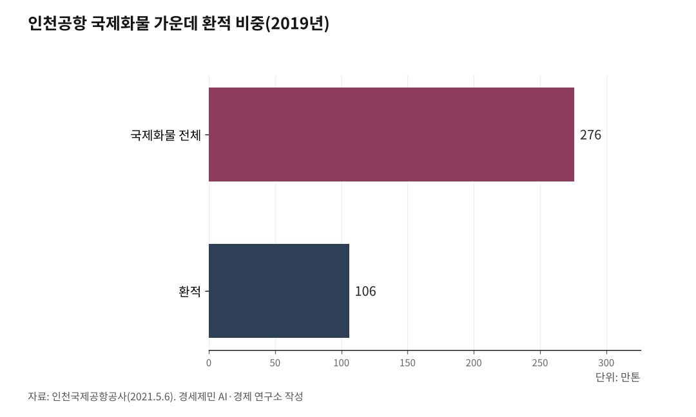

[세계3위 인천공항미래⑤] 반도체는 전략 자원이다, 다음 알짜는 배후단지에서 키운다
세계가 한국 반도체를 찾는다, 항공이 그 길이라 수요가 곧 인천으로 온다
수요처로 노선과 항공자유화를 넓히고, 차세대 화물을 찾아 배후단지 산업으로 키운다
인하대 해양AI융합센터 김갑봉 연구교수
인천국제공항(ICN)의 2025년 항공화물은 295만톤으로, 국제화물 기준 홍콩과 상하이에 이은 세계 3위다. 국제공항협의회(ACI) 기준이다. 이 화물이 반도체 한 품목에 쏠려 위험하다는 진단이 있다. 그러나 반도체는 한국에 석유나 쌀 같은 전략 자원이고, 세계가 원하는 물건이다. 쏠림은 약점이 아니라 강점의 다른 이름이다.

길은 셋이다. 수요가 있는 곳으로 노선과 운수권을 넓혀 공급을 키우고, 10~30년 뒤 세계가 살 차세대 고부가 화물을 미리 찾으며, 그 화물을 공항 배후단지에서 산업으로 키우는 것이다.
1. 세계 3위의 실체, 알짜는 자국발 화물이다
세계 3위 화물에는 환적이 두텁다. 인천공항공사 집계로 2019년 국제화물 276만톤 가운데 환적이 106만톤으로 38%였다. 공사의 2025년 화물 전망 세미나를 보면 2024년에도 환적이 전년보다 3% 늘었다. 환적은 인천에 내리지 않고 갈아타는 짐이다.
환적이 두꺼운 것은 동북아 물류 거점이라는 증거다. 그러나 환적은 인천 땅에 남는 부가가치가 적고, 더 싸고 빠른 허브가 나타나면 홍콩이나 상하이로 빠진다. 무게는 크되 뿌리가 얕은 짐이다.
뿌리가 깊은 짐은 한국에서 나가고 들어오는 화물이다. 그 대표가 반도체다. 한국의 항공 수출입 화물은 대부분 인천을 거치니, 자국발 고부가 화물이 세계 3위의 알짜 실체다.

2. 반도체는 약점이 아니라 전략 자원이다
반도체는 한국이 메모리와 고대역폭메모리(HBM)에서 세계 선두를 쥔 전략 자원이다. 인공지능(AI) 데이터센터 수요가 커지며 세계가 한국 메모리를 찾는다.
외교 무대에서도 드러났다. 이재명 대통령은 2026년 6월 유럽 순방에서 벨기에·유럽연합(EU)과 반도체 협력을 다뤘다. 6월 10일 한-벨기에 정상회담에서 대통령은 벨기에 반도체 연구기관 아이맥(IMEC)에 한국 연구진 120여 명이 협력하고 있다며 연구 협력 확대를 제안했다. 벨기에 총리는 세계적 반도체 기업을 둔 한국과 협력하면 벨기에에도 유익하다고 화답했다.
수요는 수치로도 드러난다. 2025년 한국 수출 7097억달러(약 1029조원) 가운데 반도체가 1734억달러(약 251조원)로 24.4%를 차지했다. 산업통상부 집계로 역대 최대다.
반도체는 적은 무게로 큰 수출액을 낸다. 습도와 진동에 약해 항공으로 나른다. 강한 수요가 곧장 인천 화물로 온다. 한 품목 의존은 업황과 미국·중국 갈등에 물량이 출렁이는 변동성을 안고 있지만, 이는 줄여서 피할 일이 아니라 관리할 위험이다.
3. 수요가 있는 곳에 공급을 넓혀라
처방은 분산이 아니라 확대다. 수요가 강하니 그 수요처로 노선과 운수권을 넓혀 공급을 키운다.
먼저 화물 노선과 화물기 기반이다. 통합으로 덩치를 키운 국적 항공사가 고부가 화물 수송을 늘리고, 전용 화물기 기반을 두껍게 해야 한다.
다음은 항공자유화다. 국토교통부는 운수권 제약이 없는 항공자유화 지역을 유럽연합과 인도네시아, 호주부터 넓히기로 했다. 반도체 수요가 큰 미주와 유럽, 아세안으로 화물 운수권을 풀면 노선과 빈도를 키울 길이 열린다. 항공자유화의 인과효과는 따로 깊이 다룬다.
4. 다음 화물은 10~30년 전망에서 찾는다
오늘의 반도체에 안주하면 내일이 없다. 차세대 고부가 화물을 장기 전망에서 미리 찾아야 한다. 보잉의 세계항공화물전망(2024~2043)을 보면, 세계 항공화물은 해마다 4%씩 늘어 20년 안에 두 배가 된다. 화물기는 2023년 2340대에서 2043년 3900대로 는다. 특송 비중은 전자상거래에 힘입어 18%에서 25%로 커진다. 성장은 동아시아와 남아시아가 이끈다.
품목의 결도 바뀐다. 바이오의약품과 세포·유전자치료제는 온도와 시간을 다투는 고부가 항공 화물이고, 이차전지와 전자상거래 특송도 빠르게 큰다. 복합운송(Sea&Air)으로 처리한 전자상거래 화물은 2024년 11만8000톤으로 개항 이래 최대였다. 인천은 채비를 시작했다. 국제항공운송협회(IATA)의 의약품 항공운송 인증(CEIV Pharma)을 2019년에 받아 콜드체인(저온 유통) 처리 능력을 갖췄다.
5. 배후단지를 산업단지로, 화물을 산업으로 키운다
찾은 화물은 통과시키는 데 그치지 않고 공항 배후단지에서 길러야 한다. 환적의 얕은 부가가치를 자국발 제조의 두꺼운 부가가치로 바꾸는 길이 거기에 있다.
토대는 깔리고 있다. 인천은 2024년 바이오 분야 국가첨단전략산업 특화단지로 지정됐다. 송도는 삼성바이오로직스와 셀트리온이 모인 바이오의약품 생산·연구 거점이고, 공항이 있는 영종도는 항공물류에 붙은 생산·물류 거점, 남동산단은 원부자재 기지로 역할을 나눈다. 인천시는 26조5923억원을 투자받아 생산유발 37조4606억원과 고용 12만9209명을 일으킨다고 본다.
공항 배후단지에 바이오와 이차전지, 반도체 후공정 같은 산업을 유치하면, 그 산업이 만든 고부가 화물이 바로 옆 활주로에서 세계로 나간다. 산업과 공항이 한 몸으로 도는 구조다. 무게로 쌓은 세계 3위를 부가가치로 다시 쌓는 길이다.
그 배후단지와 공항경제권, 항공정비(MRO)와 항만 연계(Sea&Air)는 다음 글에서 짚는다.
이 글은 인천공항의 미래를 다루는 연재의 다섯 번째 글이다.
참고문헌
인천국제공항공사, "인천공항 개항 25주년" 보도자료(2025년 국제화물 295만4684톤, ACI 기준 세계 3위, 환승객 804만6572명), 2026.3.27.
산업통상부, "2025년 수출 7천억 달러 돌파, 역대 최대 실적 달성"(반도체 1734억달러 역대 최대), 2026.1.1. 발표, https://www.motir.go.kr/kor/article/ATCL8764a1224/155119048/view
대통령실, "한-벨기에 정상회담 결과 브리핑"(반도체 연구 협력 확대), 2026.6.10. (오마이뉴스 보도, https://www.ohmynews.com/NWS_Web/View/at_pg.aspx?CNTN_CD=A0003242181)
국토교통부, "산업경쟁력강화 관계장관회의, 운수권 무제약 항공자유화 지역 확대"(EU·인도네시아·호주 우선), 2024.12.11. (뉴스1 보도, https://www.news1.kr/realestate/general/5627847)
보잉(Boeing), "세계항공화물전망 2024-2043"(항공화물 연 4% 성장, 화물기 2340대에서 3900대, 특송 비중 18→25%), 2024.11.12., https://boeing.mediaroom.com/2024-11-12-Boeing-Air-Cargo-Traffic-to-Double-by-2043-as-Emerging-Markets-Drive-Growth
인천광역시, "바이오 분야 국가첨단전략산업 특화단지 육성계획"(투자 26조5923억원, 생산유발 37조4606억원, 고용 12만9209명), 2024. (인천투데이 보도, https://www.incheontoday.com/news/articleView.html?idxno=255702)
인천국제공항공사, "인천공항 개항 20주년 항공물류 성과"(2019년 국제화물 276만톤 중 환적 106만톤, 홍콩·상하이에 이은 세계 3위), 2021.5.6. (인천투데이 보도, https://www.incheontoday.com/news/articleView.html?idxno=208272)
인천국제공항공사, "2025년도 인천공항 항공화물 전망 세미나"(2024년 환적 전년 대비 3% 증가, 복합운송 Sea&Air 전자상거래 화물 11만8000톤·개항 이래 최대), 2025.2.14. (물류신문 보도, https://www.klnews.co.kr/news/articleView.html?idxno=315878)
※ 이 기사는 인공지능을 활용해 작성했습니다. 사실관계는 저자가 확인했습니다.
관련기사
- [세계3위 인천공항미래④] 환승은 강한 관문 위에서만 두꺼워진다
- [세계3위 인천공항미래⑥] 통과하는 공항에서 만드는 공항으로
- 세계 3위 인천공항, 머릿수를 넘어 1인당 부가가치까지… 고객은 항공사가 먼저다
- [세계3위 인천공항미래⑦] 활성화는 공사 독립성 위에서만 굴러간다, 통합은 그 토대를 흔든다
저작권자 © AI경세제민 무단전재 및 재배포, AI학습 및 활용 금지